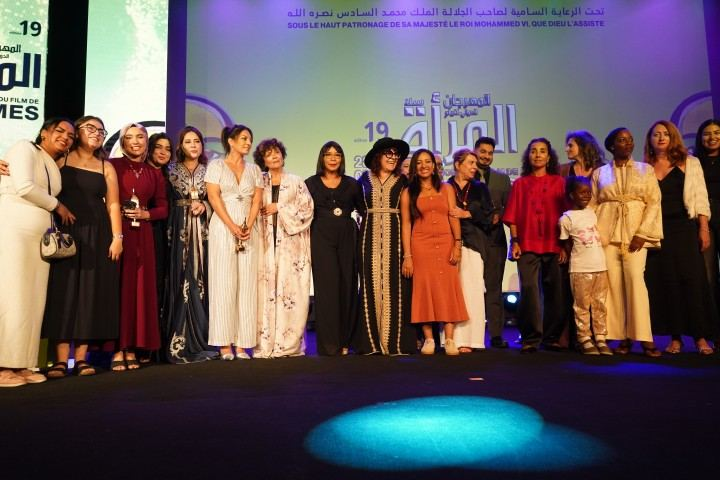

Festivals · Film
International Women’s Film Festival of Salé 2027 (FIFFS)
- Dates
- Dates TBA
- Venue
- Salé (venues TBC)
- Location
- Salé, Morocco
- Format
- In-person
- Category
- Film
- Industry
- Women’s film festival
- Organiser
- Association Bouregreg
- Official website
- https://fiffs.ma/
About
The 19th edition ran 28 September–3 October 2026 in Salé (official site: 'du 28 septembre au 03 ocrobre 2026'; palmarès already published). Official pages and the CCM calendar confirm a 2027 edition but do not publish exact dates. Record is dates TBA. Morocco dates are local (Africa/Casablanca; typically UTC+1, with occasional Ramadan clock changes).
Topics: women’s cinema, fiction, documentary, film competition.
No organiser attendance figure found on the official pages checked (24 Nov 2026). Ranked by an estimated size tier 'medium' (our judgement from format, venue and scale, not an official number).